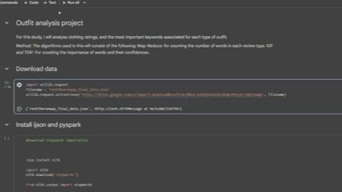

Computer Scientist
The Portfolio of Tarras Weir
❮


❯
PySpark - Shopping statistics
This project was a test of my data analysis and transformation skills using Spark, RDDs, and other related big data methods. The goal was to sift through data based on criteria, ensure the performance was optimal, the values were accurate, and get a valuable takeaway from the output. This was all run on Google Cloud clusters.
Project Two
This is the description of project two.
Project Three
This is the description of project three.
Project Four
This is the description of project four.
Character profile
About
Skills
Experience
Education
- Hometown
Oamaru - Interests
Cloud Development, Game Development, Software Development, Data Engineering & Analytics - Development
Creating bots, data projects, and more.
Game Development
Creating applications using Unity and C#Data Engineering
Data extraction, automation, and scripting.Development
Creating bots, data projects, and more.
- 2022 - 2023
Data Engineering intern @ ezyVet - 2023
Data Analyst @ Te Whatu Ora - 2024 - present
IT Service Desk Engineer @ NZAA
- 2020 - 2024
Bachelors of Computer Science at University of Canterbury - 2020 - current
Personal Projects on my github @ github.com/ItsTarras - Multiple Timeframes
2 Industry internships at ezyVet and Te Whatu Ora